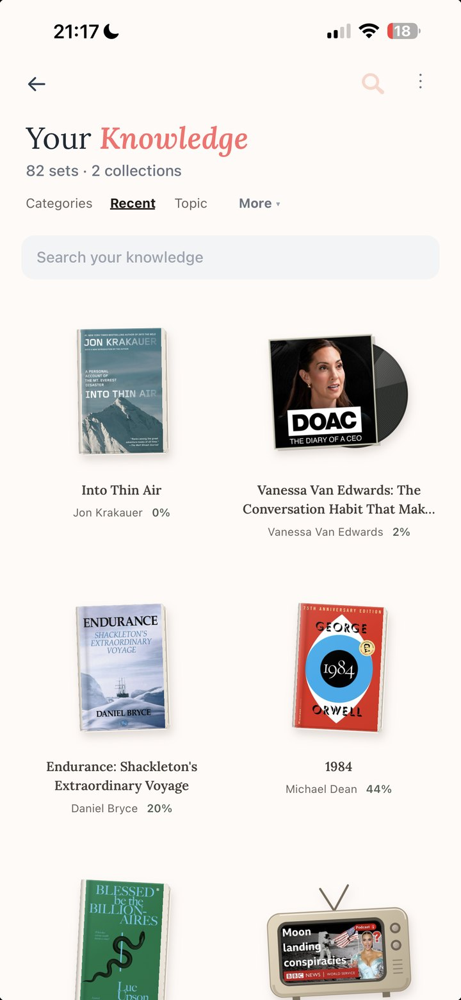

Your Knowledge Companion
Retain your knowledge.
Turn what you read, watch and listen to into knowledge that lasts.
Free on the App Store.


Sapiens
Yuval Noah Harari
Why wheat domesticated us The gossip theory of language Money is the most universal trustOne book. Three things that stayed.
Save anything
Everything you take in, in one place.
- The article you'd have lost by Friday, kept.
- The page of the book you wanted to carry with you.
- The episode you half-remember, found in a second.
- Nothing to sort. Nothing to file. Nothing to lose.
Play, not homework
A few minutes you look forward to.
- The queue, the lift, the walk: time that gives something back.
- Your own week, as a crossword.
- Beating a friend with the thing you both read.
- Never a chore. Never a deadline.
Remember for good
It stays with you.
- The thread, when someone asks at dinner.
- A year later, still yours.
- Sharper every week, and you can feel it.
- Yours. Not a platform's, not a feed's.
Our manifesto
Bookmark graveyards are useless. Doomscrolling is making us dumb. AI should make you smarter, not think for you.
- NO folders
- NO tags
- NO decks
- NO feed that decides for you
- NO selling your attention
Stop doomscrolling. Start bloom scrolling.
Who you become
Not what the app does. Who you are with it.
-
The one at dinner who still has it.
Someone asks why Rome actually fell. You read that piece last month. This time, you have the thread.
-
Pull the thread a year later.
The line you underlined, the episode you half-remember. Still there, still yours.
-
A feed worth remembering.
In the queue, in the lift, on the walk. You come away with more than you went in with.
-
Play, not a chore.
A crossword built from your week. A friend on the same board. A few minutes you look forward to.
-
Nothing gathering dust.
Not in a notes app. Not in a camera roll. Everything you kept, with you.
-
The quiet confidence of knowing.
Not the loudest in the room. The one who read the thing, watched the thing, and kept it.
Said on the App Store
In their words.

-
Really enjoying using this app as a better way to spend 5/10 minutes at bus stop etc. vs brain rotting on Insta/X.
App Store review · jsdldn -
It's replaced scrolling Instagram on my phone, and it's helping me re-engage with books I read years ago, and actively seek out interesting knowledge to add to my second brain.
App Store review · 24601_London -
Very nice and fun way to retrain your brain – love a competition with friends. Love that app!
App Store review · Sizeret74 -
Such a fun and easy way to remember the things that matter the most to me! New content is also great to discover! Definitely one of my favorite apps!
App Store review · Cathb1234 -
As a non-techy over 60 year old, this app is simple and intuitive to navigate.
App Store review · Mooselake4

Why this exists
I watched my nieces and nephews grow up on Shorts.
I spent twelve years investing in technology, and I watched my nephews and nieces grow up on YouTube Shorts. Then I read that the Flynn effect has reversed: for the first time, population IQ scores have started to fall.
Neil Postman saw it coming in 1985. Orwell feared the people who would ban books; Huxley feared there would be no need to, because no one would want to read one. That's the feed.
I left my job on my 34th birthday to build the antidote. I build REPS and use it every day, and I'd like it to be where what you read, watch and hear stays with you.
Mike McGraw · founder, REPS
About & press kit →The AI that powers REPS uses a little energy, so we plant real trees for it, far more than we use. The planet pledge →
Free on the App Store
Your Knowledge Companion.
You take in more than ever. Now it stays with you.
Download on the App StoreFree on the App Store.